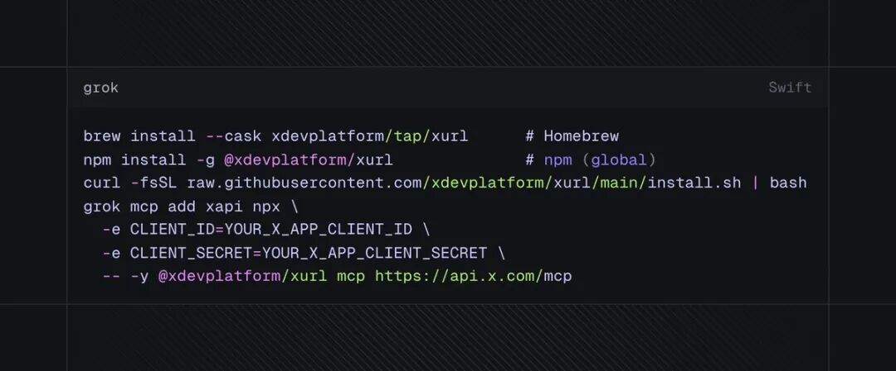

X DEVELOPER INTELLIGENCE大伙儿应该都深有体会，现在用 AI 查资料、写代码最痛苦的是什么？是“时差”。任凭你的大模型参数再大、逻辑再强，一问到“今天推特上在转什么梗”、“昨晚科技界发布会大家反应怎么样”，它立马就傻眼了。要么给你胡编乱造，要么双手一摊抛出一句：“对不起，我的知识库只更新到某某年。”虽然市面上一堆打着“联网搜索”旗号 of AI 插件，但说白了，那些都是在拿搜索引擎的网页摘要去糊弄事。真正一手的、最新鲜的科技互联网风向和行业内幕，全都在 X（Twitter）里埋着呢。好消息是，马斯克这次终于把大门打开了。X 开发者平台（@xdevplatform）发布了官方开源 MCP（模型上下文协议）服务 —— **xmcp**。⚡ 核心痛点被干掉了：以前想用 X 的数据，每个月起步就是 200 刀的霸王硬性消费，还得自己写一堆脏活累活般的 API 调用代码。现在通过 MCP 协议，你的 AI 客户端（Cursor、Claude）能直接“长出眼睛”，零门槛看清 X 平台里正在发生的一切。01/ 搞懂接入：本地自建 vs 官方云托管根据 X 官方最新释出的技术文档，这次的 MCP 并不是一个简单的黑盒接口，而是给开发者提供了**两种完全不同的接入姿势**。选择哪一种，直接决定了你的开发体验和钱包厚度：（X-MCP 两种部署通路对比图）📂 方案 A：本地自建桥接模式（Running Local xmcp Server） 官方在 GitHub 开源了 `xmcp` 仓库。你需要在你本地的电脑或者服务器上，把这个 Python 编写的服务跑起来。工作原理： 你的本地 IDE（比如 Cursor）通过标准的本地协议（stdio 或 本地 SSE）向你的 Local Server 发送请求。这个 Local Server 拿到请求后，在后台用你的 X API 密钥去调 X 官方的 OpenAPI，再把结果清洗好返回给 Cursor。 适用人群： 极客、喜欢折腾本地脚本、希望对返回的数据格式做本地过滤/魔改的开发者。☁️ 方案 B：官方云端托管模式（Hosted MCP） 这是马斯克团队最让人惊喜的手笔。你不需要在本地跑任何后台 Python 进程，也不用管什么守护进程。

工作原理： X 平台直接在云端把数据源做成了标准 MCP 接口。你在 X 开发者后台创建一个 Hosted MCP 配置，拿到一个专属 Richmond ID。然后你直接把 Claude Desktop 连向 X 官方的云端端点 `https://api.x.com/v2/mcp`。整个认证、流控、协议转换，全部在 X 官方云端完成。 适用人群： 团队协作项目、使用云端 IDE（如 Replit、IDX）的开发者，或者不希望在自己本地电脑常驻后台程序的“极简主义者”。02/ 降维打击：PK 传统搜索与野路子爬虫在 X-MCP 出来之前，大模型想要获取实时动态，主流方式有两种：一是靠 Google/Bing 等搜索引擎的**大模型检索 API（Search API）**，二是靠各种灰色地带的**第三方推特爬虫（Scrapers）**。没有对比就没有伤害，我们在不使用传统 Table 标签的前提下，通过专门为微信优化、100% 完美呈现的**高阶对比卡片流**，把这三者的底牌亮出来做个硬核对比：⚡ 维度：实时度与数据延迟LATENCYX 官方 MCP：秒级更新 (直连推特源)传统搜索 API：小时/天级 (等待爬虫收录)野路子爬虫：分钟级 (极高封号断流风险)📊 维度：获取的数据深度DEPTHX 官方 MCP：极深 (书签/时间线/用户档案)传统搜索 API：极浅 (仅限于公开网页快照)野路子爬虫：中等 (极易受前端改版打断)🌟 维度：开发与部署难度EASYX 官方 MCP：极低 (协议规范，即接即用)传统搜索 API：中等 (需繁杂的代码请求适配)野路子爬虫：地狱级 (需长期死磕反爬机制)💰 维度：实际资费性价比COSTX 官方 MCP：按量计费 (约 $0.005/Read)传统搜索 API：便宜 (低频查询甚至免费)野路子爬虫：昂贵 (极高住宅代理 IP 代理成本)很明显，X-MCP 不是为了取代 Google 去帮你查“番茄炒蛋怎么做”，而是为了在**社交舆论、突发科技动态、加密货币叙事**这几个核心场景里，给 AI 戴上“实时显微镜”。它真正的杀伤力在于：**第一次实现了低成本、官方合规的 AI 社交数据消费。** 以前用野路子爬虫，你得担心 IP 随时被推特风控、账号被封，还要承担不道德数据抓取的道德压力。而现在，马斯克亲自当庄，把最值钱、最高频的数据切碎，以 **$0.005$/次** 的价格零售给开发者。03/ 终极脑洞：未来真正能赚钱的三个硬核场景不要只把 MCP 当作 Cursor 编程里的一个“小工具”。如果你是一个敏锐的创业者，或者正试图通过 AI Agent 变现，X-MCP 的落地场景能让你玩出花来。💰 场景 A：寻找 Alpha 机会的加密与量化交易代理在 Web3 和美股市场，大佬们在 X 上的一句暗示，瞬间就能撬动数千万美金的波动。有了 X-MCP，你可以写一个 24 小时不间断监听特定科学家、创始人推文的 AI Agent。结合 MCP 的高频监控，AI 在识别到特定关键词（比如“X Corp”、“Merge”）的 0.5 秒内，就能自动执行智能合约或美股期权交易，抢跑整个市场。📢 场景 B：防患于未然的公关舆情与 Bug 监控哨兵对于 SaaS 软件或开源项目，用户遇到 Bug 第一反应永远是在推特上吐槽。你可以将本地的 `xmcp` 和你团队内部的 Slack/Discord 机器人打通。一旦检测到推特上出现关于你产品的负面舆论或异常反馈，AI 会自动通过 MCP 抓取上下文、提炼用户痛点，甚至拉取该用户的历史发帖判断其影响力，并在你公司的群里发出紧急预警，甚至提前写好回应草稿。✍️ 场景 C：千人千面的硬核科技知识“情报局”你平时是不是收藏了一大堆 X 的精彩推文和干货线程，却再也没有打开过？现在，你可以让 AI 每天深夜定时通过 `readBookmarks` 或特定的 `list` 抓取你的收藏夹。AI 会通过深度推理（Reasoning），剥离掉口水话和情绪垃圾，将当天你最关心的领域输出成一份逻辑清晰、带有深度技术剖析的“个人定制情报日报”，彻底帮你打破信息茧房。实现这些并不复杂。官方推荐的启动步骤极简：登录 developer.x.com 注册并开通 PPU 按需计费（最低仅需充值 5 美元），然后选用上面提到的**本地桥接**或**官方云端托管**任一方式，把 API 密钥和本地 IDE 一接，整个推特的浩瀚数据就成为了你 AI 助手的无尽燃料。⚡ TECH DECK: INTERACTING WITH XMCPsystem_prompt: [Active Tools] xmcp::searchPostsRecent, xmcp::readBookmarksuser: 监控最近半小时关于 @elonmusk 发言下的高赞情绪，如果出现负面急剧攀升，立刻预警。>>> querying api.x.com/v2/mcp (Hosted SSE Endpoint)- Total Posts Parsed: 154 - Positive Sentiment: 42% - Negative Sentiment: 58% (Triggered Rule: "Negative > 50%") - Major Complaint: "API billing rate change discussion..."● [ALERT SYSTEM]: detected high frequency agitation on thread. Draft response initiated.💬 互动时间 / JOIN THE CONVERSATION以前 AI 圈常说“数据是新的石油”，马斯克这次把这一池子石油，直接用高压水枪全天候喷射给全世界的 AI 端。你觉得 X 这一步棋，会倒逼 OpenAI、Google 开放更便宜、更深层的实时接口吗？如果是你，你最想给 AI 客户端塞进 X 的哪部分数据（比如你关注的大佬时间线、你的私密书签）？欢迎在评论区留下你的硬核脑洞，我们聊聊。